SE(3): 3D Transformations¶
The group of all proper rigid transformations (rototranslations) in the
3D Cartesian space is  (SE: special Euclidean group).
Transformations consist of a rotation and a translation. Those can be
represented in different ways just like rotations can be expressed
in different ways.
(SE: special Euclidean group).
Transformations consist of a rotation and a translation. Those can be
represented in different ways just like rotations can be expressed
in different ways.
For most representations of orientations we can find an analogous representation of transformations [1]:
A transformation matrix
 is similar to a rotation
matrix
is similar to a rotation
matrix  .
.A screw axis
 is similar to a rotation axis
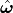.
is similar to a rotation axis
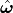.A screw matrix 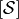 is similar to a cross-product matrix of a unit rotation axis
![\left[\hat{\boldsymbol{\omega}}\right]](_images/math/4bed140b7da8512e3d291427a08a767df57dfcff.png) .
.The logarithm of a transformation 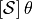 is similar to a cross-product matrix of the angle-axis representation 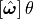.
The exponential coordinates
 for rigid body
motions are similar to exponential coordinates
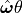 for rotations (axis-angle
representation).
for rigid body
motions are similar to exponential coordinates
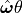 for rotations (axis-angle
representation).A twist
 is similar to
angular velocity 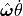.
is similar to
angular velocity 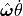.A (unit) dual quaternion 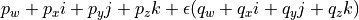 is similar to a (unit) quaternion 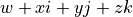.
Here is an overview of the representations and the conversions between them that are available in pytransform3d.

Transformation Matrix¶
One of the most convenient ways to represent transformations are transformation matrices. A transformation matrix is a 4x4 matrix of the form
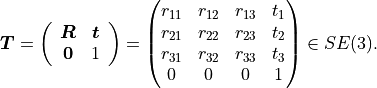
It is a partitioned matrix with a 3x3 rotation matrix
and a column vector  that represents the translation.
It is also sometimes called the homogeneous representation of a transformation.
All transformation matrices of this form generate the special Euclidean group
, that is,
that represents the translation.
It is also sometimes called the homogeneous representation of a transformation.
All transformation matrices of this form generate the special Euclidean group
, that is,
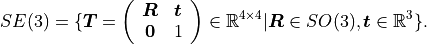
pytransform3d uses a numpy array of shape (4, 4) to represent transformation matrices and typically we use the variable name A2B for a transformation matrix, where A corrsponds to the frame from which it transforms and B to the frame to which it transforms.
It is possible to transform position vectors or direction vectors with it.
Position vectors are represented as a column vector
 .
This will activate the translation part of the transformation in a matrix
multiplication. When we transform a direction vector, we want to deactivate
the translation by setting the last component to zero:
.
This will activate the translation part of the transformation in a matrix
multiplication. When we transform a direction vector, we want to deactivate
the translation by setting the last component to zero:
 .
.
We can use a transformation matrix  to transform a
point 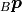 from frame
to transform a
point 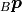 from frame  to frame
to frame  .
For example, transforming a position vector
.
For example, transforming a position vector  will give the following
result:
will give the following
result:
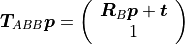
Position and Quaternion¶
An alternative to transformation matrices is the representation in a 7-dimensional vector that consists of the translation and a rotation quaternion:
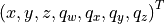
This representation is more compact than a transformation matrix and is particularly useful if you want to represent a sequence of poses in a 2D array.
pytransform3d uses a numpy array of shape (7,) to represent position and quaternion and typically we use the variable name pq.
Screw Parameters¶
Just like any rotation can be expressed as a rotation by an angle about a
3D unit vector, any transformation (rotation and translation) can be expressed
by a motion along a screw axis [2] [3] [4]. The screw parameters that
describe a screw axis include a point vector  through
which the screw axis passes, a (unit) direction vector
that
indicates the direction of the axis, and the pitch
through
which the screw axis passes, a (unit) direction vector
that
indicates the direction of the axis, and the pitch  . The pitch
represents the ratio of translation and rotation. A screw motion translates
along the screw axis and rotates about it.
. The pitch
represents the ratio of translation and rotation. A screw motion translates
along the screw axis and rotates about it.
pytransform3d uses two vectors q and s_axis of shape (3,) and a scalar h to represent the parameters of a screw.

Screw Axis¶
A screw axis is typically represented by 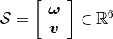, where either
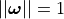 or
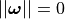 and 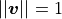 (only translation).
pytransform3d uses a numpy array of shape (6,) to represent a screw axis and typically we use the variable name S or screw_axis.
In case 1, we can compute the screw axis from screw parameters
 as
as
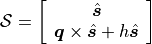
In case 2, is infinite and we directly translate along .
Exponential Coordinates¶
By multiplication with an additional parameter  we can then
define a complete transformation through its exponential coordinates
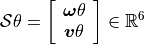.
This is a minimal representation as it only needs 6 values.
we can then
define a complete transformation through its exponential coordinates
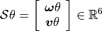.
This is a minimal representation as it only needs 6 values.
pytransform3d uses a numpy array of shape (6,) to represent a exponential coordinates of transformation and typically we use the variable name Stheta.
Warning
Note that we use the screw theory definition of exponential coordinates
and 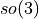 (see next section) used by Paden (1985), Lynch and Park
(2017), and Corke (2017). They separate the parameter from
the screw axis. Additionally, they use the first three components to encode
rotation and the last three components to encode translation. There is an
alternative definition used by Eade (2017) and Sola et al. (2018). They use
a different order of the 3D vector components and they do not separate
from the screw axis in their notation.
Logarithm of Transformation¶
Alternatively, we can represent a screw axis in a matrix
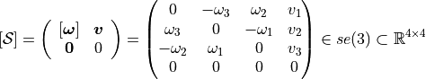
that contains the cross-product matrix of its orientation part and its translation part. This is the matrix representation of a screw axis and we will also refer to it as screw matrix in the API.
pytransform3d uses a numpy array of shape (4, 4) to represent a screw matrix and typically we use the variable name screw_matrix.
By multiplication with we can again generate a full
description of a transformation
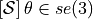, which is the matrix
logarithm of a transformation matrix and 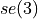 is the Lie
algebra of Lie group .
pytransform3d uses a numpy array of shape (4, 4) to represent the logarithm of a transformation and typically we use the variable name transform_log.
Twist¶
We call spatial velocity (translation and rotation) twist. Similarly
to the matrix logarithm, a twist 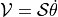
is described by a screw axis  and a scalar 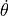
and 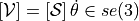
is the matrix representation of a twist.
and a scalar 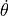
and 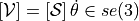
is the matrix representation of a twist.
Dual Quaternions¶
Similarly to unit quaternions for rotations, unit dual quaternions are an alternative to represent transformations [5] [6] [7]. They support similar operations as transformation matrices.
A dual quaternion consists of a real quaternion and a dual quaternion:
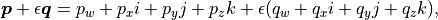
where  . We use unit dual quaternions to represent
transformations. In this case, the real quaternion is a unit quaternion
and the dual quaternion is orthogonal to the real quaternion.
The real quaternion is used to represent the rotation and the dual
quaternion contains information about the rotation and translation.
. We use unit dual quaternions to represent
transformations. In this case, the real quaternion is a unit quaternion
and the dual quaternion is orthogonal to the real quaternion.
The real quaternion is used to represent the rotation and the dual
quaternion contains information about the rotation and translation.
Dual quaternions support similar operations as transformation matrices, they can be renormalized efficiently, and interpolation between two dual quaternions is possible.
Warning
The unit dual quaternions 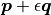 and 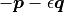 represent exactly the same transformation.
The reason for this ambiguity is that the real quaternion
 represents the orientation component, the dual
quaternion encodes the translation component as
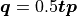, where
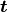 is a quaternion with the translation in the vector
component and the scalar 0, and rotation quaternions have the same ambiguity.
represents the orientation component, the dual
quaternion encodes the translation component as
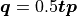, where
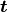 is a quaternion with the translation in the vector
component and the scalar 0, and rotation quaternions have the same ambiguity.